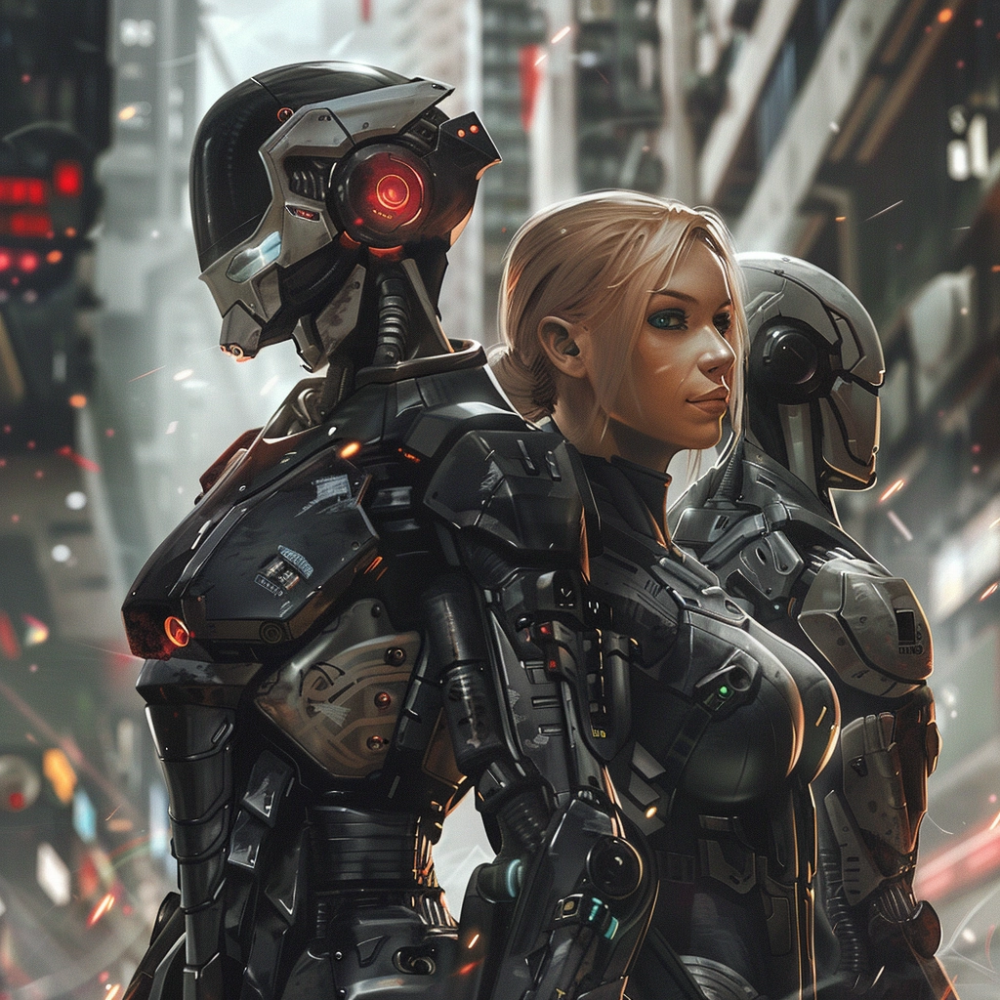

При создании персонажа вы можете использовать следующие числа для ваших характеристик: 15, 14, 13, 12, 10, 8. Если вам не нравятся данные значения - вы можете использовать калькулятор характеристик для их более тонкой настройки. Ссылка на калькулятор.
Теперь запишите каждое из шести полученных чисел рядом с каждой из шести характеристик вашего персонажа, чтобы присвоить значения Силе, Ловкости, Телосложению, Интеллекту, Мудрости и Харизме. По ходу генерации персонажа эти значения могут увеличиваться или уменьшаться.
РасаВ рамках правил Lost Colony на данный момент существует 3 варианта рас: Человек, Киборг и ИИ. Расы отличаются внешним видом, начальным бонусом к хитам, количеством черт и расовыми умениями. ЧеловекЧистые, немодифицированные люди - это 97% населения Земной Федерации. Будучи человеком вы получаете следующие преимущества: Характеристики. Выберете одно из: (а) Значение одной характеристики по вашему выбору увеличивается на 2, а другой — на 1; (б) Значение трёх различных характеристик по вашему выбору увеличивается на 1. Хиты. Как человек вы получаете 6 дополнительных хитов на 1-ом уровне. Черты. Вы получаете 2 черты по вашему выбору. Вы должны соответствовать условиям выбираемых черт. Скорость. Ваша базовая скорость ходьбы составляет 25 футов. Навыки. Вы получаете владение двумя навыками на ваш выбор. Профессиональная квалификация. Вы получаете владение набором инстументов или одним навыком по вашему выбору. В качестве альтернативы вы можете выбрать компетентность в одном известном вам навыке. КиборгХоть для большей части народа импланты только входят в обиход - вы, тем не менее, уже успешно шагнули на пару веков в будущее. Будучи киборгом вы получаете следующие преимущества: Характеристики. Выберете одно из: (а) Значение одной характеристики по вашему выбору увеличивается на 2, а другой — на 1; (б) Значение трёх различных характеристик по вашему выбору увеличивается на 1. Хиты. Как киборг с кучей металических компонентов вы получаете 8 дополнительных хитов на 1-ом уровне. Черта. Вы получаете 1 черту по вашему выбору. Вы должны соответствовать условиям выбираемой черты. Скорость. Ваша базовая скорость ходьбы составляет 25 футов. Навыки. Вы получаете владение двумя навыками на ваш выбор. Двойная натура. Вы и робот и человек одновременно. На вас действуют как навыки, затрагивающие только живых существ, так и те, что воздействуют только на роботов. Вы можете совершать с преимуществом Спасброски против умений, воздействующих только на роботов, не получая никакого урона или негативного эффекта при успехе. Модификации. Вы получаете возможность выбрать 2 импланта из списка достуных инженеру - имлантовому маньяку. Вы можете выбрать только базовые импланты, доступные со второго уровня. ИИВ разработке... Бип-бип, смерть людям! Начальный капиталЕсли при начале кампании мастер не предоставит вам никаких дополнительных правил генерации, то каждый персонаж начинает игру с 3.000 кредитов. |
 |